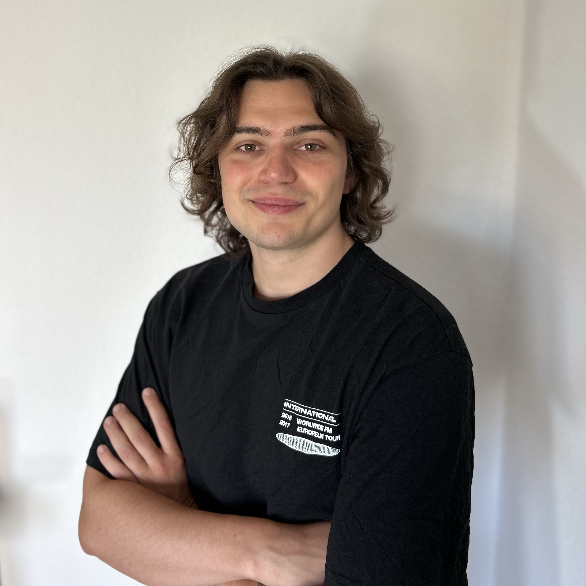

I recently completed my bachelor's thesis at TH Cologne in the Code & Context program.
During my studies, I focused on Unity and XR development, and I'm now eager to bring
this enthusiasm into a professional setting. On this website, I showcase my most recent and interesting projects alongside with some of
the fun stuff I do in my spare time.
Feel free to reach out if you have any questions
about my projects or would like to discuss work opportunities.
